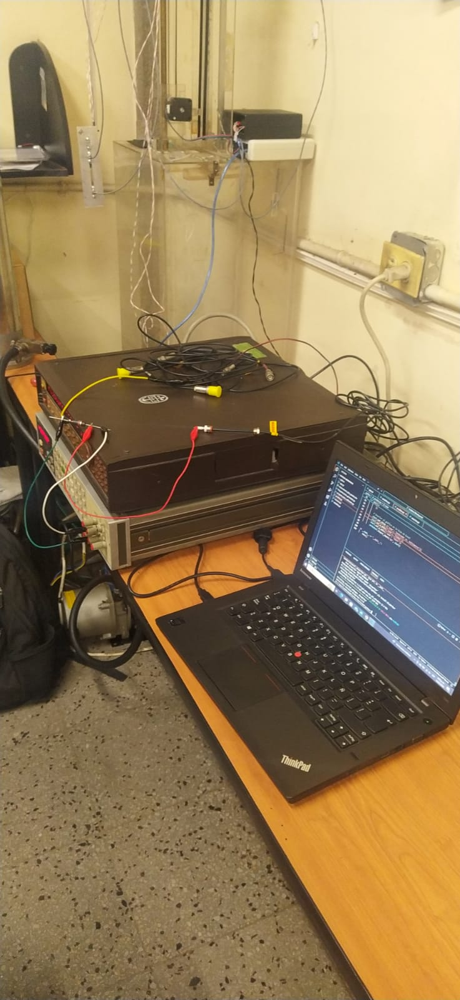
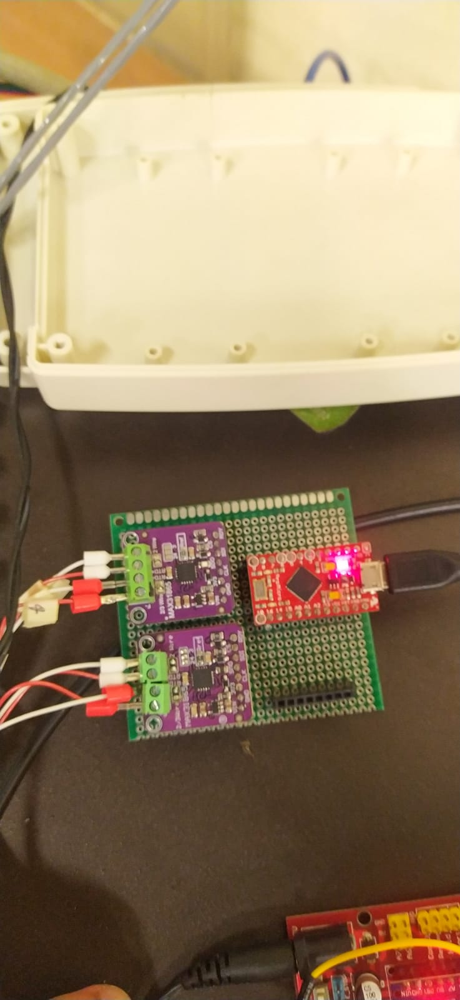
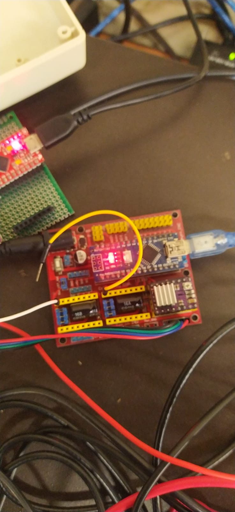
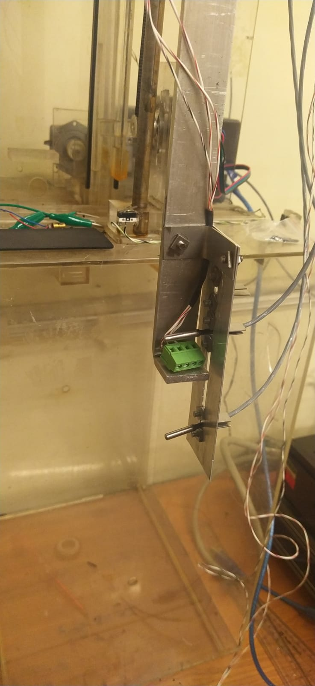

Embedded systems design for cryogenic applications
C, Altium, Python, GPIB
Design of a unified control system for semiconductor measurements at liquid nitrogen temperatures to measure voltage and current at low temperatures for electronic components. The data were measured by means of the implementation of a C program to manage high-precision instrumentation (nano-ampere sources, high-precision voltmeters and PT100 sensors). The integration of servo motor control and automated test sequences was performed using Python.

The data collected by the sensors was converted to serial format and processed for subsequent transmission to the computer.

The data collected by the sensors was converted to serial format and processed for subsequent transmission to the computer.

The servomotor that controlled the mechanical arm was controlled by means of an Arduino Nano.

To measure each component, an arm with two PT100 sensors was used, which were submerged in liquid nitrogen. The idea was to calculate the gradient between the lower and upper sensors.